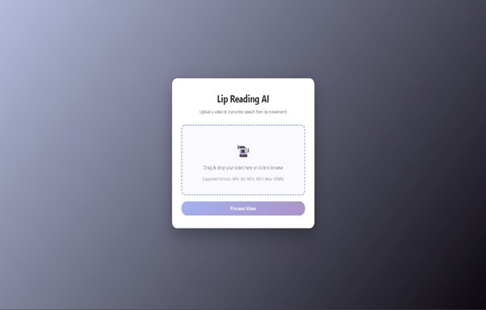
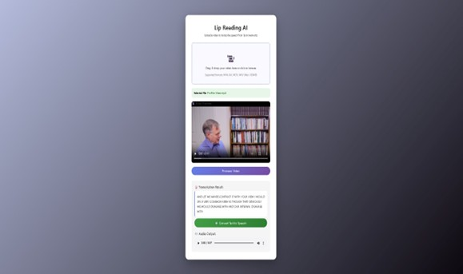

My Projects
Here are the projects I have worked on
29Yarntale - Profit Tracker


This is a web app i built for a real business called 29Yarntale which is a crochet brand. The app tracks all the products they sell and calculates the profit after removing material cost and shipping cost. It also splits the profit between 3 workers (Nisha, Moksha and Madhu) automatically based on who made the product. The data is stored in Firebase Firestore and the app is deployed on Vercel. There is also a login system so only the owner can add or delete products. There is a demo account too which is read only.
Features :
- Login system with admin and demo accounts
- Add, edit and delete products
- Auto calculates profit for each product
- Splits profit between 3 workers automatically
- Shows total revenue, profit and average profit
- Notes section for order tracking
- Data stored in Firebase
Lip To Speech Recognition System


A deep learning-based application that interprets human lip movements from video input and converts them into audible speech in real time. The system bridges the gap between visual communication and audio output, making it a powerful assistive technology for individuals with speech or hearing impairments. The project leverages computer vision and sequence modeling techniques to analyze lip motion patterns and map them to corresponding speech sounds. The recognized text is then converted to natural-sounding audio using Google Text-to-Speech (gTTS), creating a seamless lip-to-audio pipeline.
Features :
- Detects and isolates the lip region from video frames using computer vision
- Processes lip movements and predicts spoken words/phrases in real time
- Accessible UI built with Flask, runs in any browser
- Works without any microphone or audio input
- Leverages gTTS multi-language capabilities
- Clean, modular codebase written entirely in Python